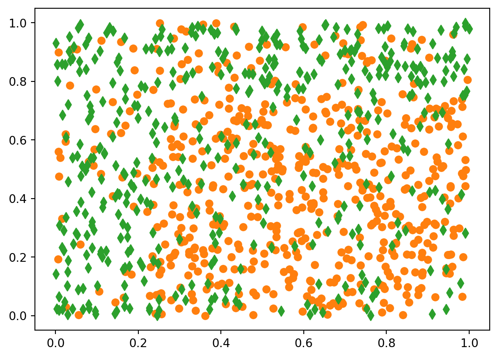
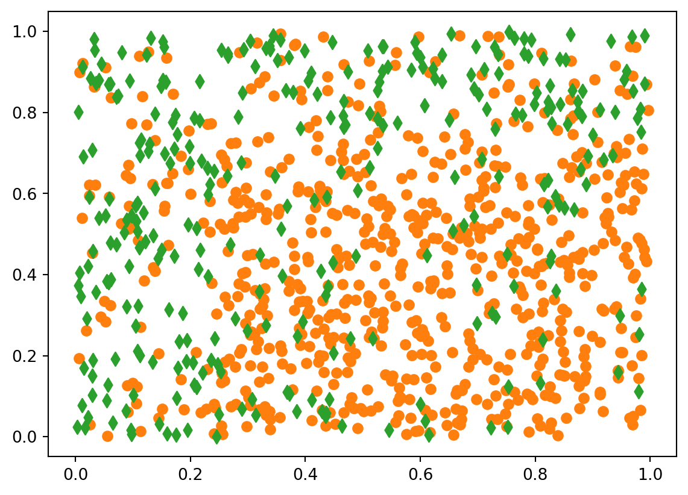
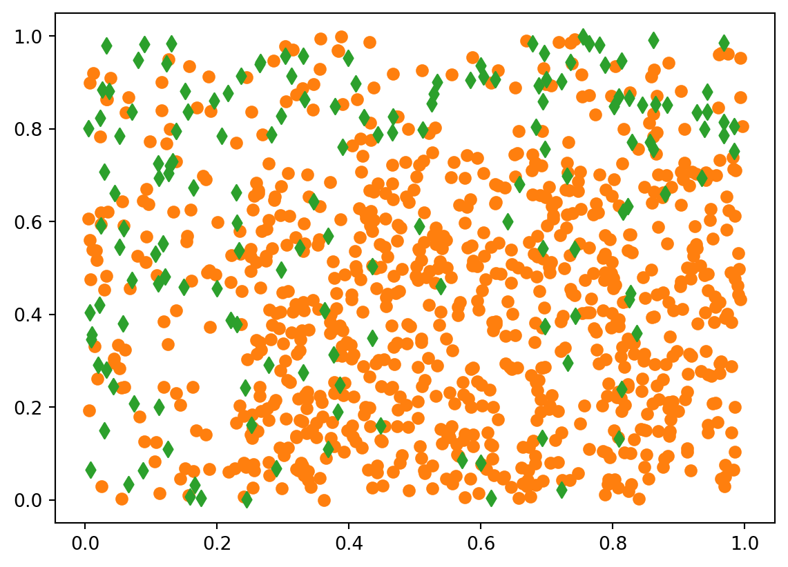

import numpy as np
import pandas as pd
import matplotlib.pyplot as plt
rng = np.random.default_rng(seed=1234)16 Données déséquilibrées
Exercice 1 (Critères pour un exemple de données déséquilibrées)
n = 500 p = 0.05 Y = rng.binomial(1, p=p, size=n)rng = np.random.default_rng(seed=123) P1 = rng.binomial(1, p=0.005, size=n)P2 = np.zeros_like(P1) for yy in range(n): if Y[yy]==0: P2[yy] = rng.binomial(1, p=0.10, size=1)[0] else: P2[yy] = rng.binomial(1, p=0.85, size=1)[0]from sklearn.metrics import confusion_matrix print(confusion_matrix(Y, P1))[[478 0] [ 22 0]]print(confusion_matrix(Y, P2))[[432 46] [ 4 18]]cm = confusion_matrix(Y, P2) acc = cm.diagonal().sum()/cm.sum() rec = cm[1,1]/cm[1,:].sum() prec = cm[1,1]/cm[:,1].sum() print(acc) print(rec) print(prec)0.9 0.8181818181818182 0.28125F1 = 2*(rec*prec)/(rec+prec) print(F1) rand = cm[:,0].sum()/n*cm[0,:].sum()/n + cm[:,1].sum()/n*cm[1,:].sum()/n kappa = (acc-rand)/(1-rand) print(kappa)0.41860465116279066 0.37786183555644093from sklearn.metrics import accuracy_score, recall_score, precision_score from sklearn.metrics import f1_score, cohen_kappa_score print(accuracy_score(Y, P2), "**", accuracy_score(Y, P1)) print(recall_score(Y, P2), "**", recall_score(Y, P1)) print(precision_score(Y, P2), "**", precision_score(Y, P1)) print(f1_score(Y, P2), "**", f1_score(Y, P1)) print(cohen_kappa_score(Y, P2), "**", cohen_kappa_score(Y, P1))0.9 ** 0.956 0.8181818181818182 ** 0.0 0.28125 ** 0.0 0.4186046511627907 ** 0.0 0.3778618355564404 ** 0.0
Exercice 2 (Échantillonnage rétrospectif) On remarque d’abord que \(\mathbf P(\tilde y_i=1)=\mathbf P(y_i=1|s_i=1)\). De plus \[ \text{logit}\, p_\beta(x_i)=\log\frac{\mathbf P(y_i=1)}{\mathbf P(y_i=0)}\quad\text{et}\quad \text{logit}\, p_\gamma(x_i)=\log\frac{\mathbf P(y_i=1|s_i=1)}{\mathbf P(y_i=0|s_i=1)}. \] Or \[ \mathbf P(y_i=1|s_i=1)=\frac{\mathbf P(y_i=1,s_i=1)}{\mathbf P(s_i=1)}=\frac{\mathbf P(s_i=1|y_i=1)\mathbf P(y_i=1)}{\mathbf P(s_i=1)} \] et \[ \mathbf P(y_i=0|s_i=1)=\frac{\mathbf P(y_i=0,s_i=1)}{\mathbf P(s_i=1)}=\frac{\mathbf P(s_i=1|y_i=0)\mathbf P(y_i=0)}{\mathbf P(s_i=1)}. \] Donc \[ \text{logit}\, p_\gamma(x_i)=\log\frac{\mathbf P(y_i=1)}{\mathbf P(y_i=0)}+\log\frac{\mathbf P(s_i=1|y_i=1)}{\mathbf P(s_i=1|y_i=0)}=\text{logit}\,p_\beta(x_i)+\log\left(\frac{\tau_{1i}}{\tau_{0i}}\right). \]
Exercice 3 (Rééquilibrage)
df1 = pd.read_csv("../donnees/dd_exo3_1.csv", header=0, sep=',') df2 = pd.read_csv("../donnees/dd_exo3_2.csv", header=0, sep=',') df3 = pd.read_csv("../donnees/dd_exo3_3.csv", header=0, sep=',')print(df1.describe()) print(df2.describe()) print(df3.describe())X1 X2 Y count 1000.000000 1000.000000 1000.000000 mean 0.514433 0.492924 0.441000 std 0.281509 0.291467 0.496755 min 0.000516 0.000613 0.000000 25% 0.284947 0.238695 0.000000 50% 0.518250 0.494121 0.000000 75% 0.753628 0.739679 1.000000 max 0.999567 0.999829 1.000000 X1 X2 Y count 1000.000000 1000.000000 1000.000000 mean 0.520809 0.472473 0.308000 std 0.280013 0.283496 0.461898 min 0.002732 0.000890 0.000000 25% 0.296167 0.225272 0.000000 50% 0.521226 0.468858 0.000000 75% 0.764060 0.693746 1.000000 max 0.996044 0.999183 1.000000 X1 X2 Y count 1000.000000 1000.000000 1000.000000 mean 0.538032 0.454919 0.158000 std 0.273863 0.271638 0.364924 min 0.004914 0.000613 0.000000 25% 0.322489 0.221447 0.000000 50% 0.545587 0.450438 0.000000 75% 0.781116 0.663637 0.000000 max 0.996044 0.999829 1.000000colo = ["C1", "C2"] mark = ["o", "d"] for yy in [0, 1]: plt.scatter(df1.loc[df1.Y==yy, "X1"], df1.loc[df1.Y==yy, "X2"], color=colo[yy], marker=mark[yy])
for yy in [0, 1]: plt.scatter(df2.loc[df2.Y==yy, "X1"], df2.loc[df2.Y==yy, "X2"], color=colo[yy], marker=mark[yy])
for yy in [0, 1]: plt.scatter(df3.loc[df3.Y==yy, "X1"], df3.loc[df3.Y==yy, "X2"], color=colo[yy], marker=mark[yy])
from sklearn.model_selection import train_test_split ## separation en matrice X, Y (et creation du produit=interaction) T1 = df1.drop(columns="Y") X1 = T1.assign(inter= T1.X1 * T1.X2).to_numpy() y1 = df1.Y.to_numpy() T2 = df2.drop(columns="Y") X2 = T2.assign(inter= T2.X1 * T2.X2).to_numpy() y2 = df2.Y.to_numpy() T3 = df3.drop(columns="Y") X3 = T3.assign(inter= T3.X1 * T3.X2).to_numpy() y3 = df3.Y.to_numpy() ## separation apprentissage/validation X1_app, X1_valid, y1_app, y1_valid = train_test_split( X1, y1, test_size=0.33, random_state=1234) X2_app, X2_valid, y2_app, y2_valid = train_test_split( X2, y2, test_size=0.33, random_state=1234) X3_app, X3_valid, y3_app, y3_valid = train_test_split( X3, y3, test_size=0.33, random_state=1234)from sklearn.linear_model import LogisticRegression mod1 = LogisticRegression(penalty=None, solver="newton-cholesky").fit(X1_app, y1_app) mod2 = LogisticRegression(penalty=None, solver="newton-cholesky").fit(X2_app, y2_app) mod3 = LogisticRegression(penalty=None, solver="newton-cholesky").fit(X3_app, y3_app)from sklearn.metrics import accuracy_score, balanced_accuracy_score, f1_score, cohen_kappa_score P1 = mod1.predict(X1_valid) P2 = mod1.predict(X2_valid) P3 = mod1.predict(X3_valid) s1 = pd.DataFrame({"crit": ["acc", "bal_acc", "F1", "Kappa"]}) s2 = pd.DataFrame({"crit": ["acc", "bal_acc", "F1", "Kappa"]}) s3 = pd.DataFrame({"crit": ["acc", "bal_acc", "F1", "Kappa"]}) print("--- donnees 1 ---") s1 = s1.assign(brut=0.0) s1.iloc[0,1] = accuracy_score(y1_valid, P1) s1.iloc[1,1] = balanced_accuracy_score(y1_valid, P1) s1.iloc[2,1] = f1_score(y1_valid, P1) s1.iloc[3,1] = cohen_kappa_score(y1_valid, P1) print(s1) print("--- donnees 2 ---") s2 = s2.assign(brut=0.0) s2.iloc[0,1] = accuracy_score(y2_valid, P2) s2.iloc[1,1] = balanced_accuracy_score(y2_valid, P2) s2.iloc[2,1] = f1_score(y2_valid, P2) s2.iloc[3,1] = cohen_kappa_score(y2_valid, P2) print(s2) print("--- donnees 3 ---") s3 = s3.assign(brut=0.0) s3.iloc[0,1] = accuracy_score(y3_valid, P3) s3.iloc[1,1] = balanced_accuracy_score(y3_valid, P3) s3.iloc[2,1] = f1_score(y3_valid, P3) s3.iloc[3,1] = cohen_kappa_score(y3_valid, P3) print(s3)--- donnees 1 --- crit brut 0 acc 0.657576 1 bal_acc 0.655825 2 F1 0.622074 3 Kappa 0.309572 --- donnees 2 --- crit brut 0 acc 0.724242 1 bal_acc 0.740841 2 F1 0.637450 3 Kappa 0.427280 --- donnees 3 --- crit brut 0 acc 0.693939 1 bal_acc 0.729286 2 F1 0.435754 3 Kappa 0.278103from imblearn.under_sampling import RandomUnderSampler from imblearn.under_sampling import TomekLinks from imblearn.over_sampling import RandomOverSampler from imblearn.over_sampling import SMOTE ## RandomOverSampler ros3 = RandomOverSampler(random_state=123) X3_app_reech, y3_app_reech = ros3.fit_resample(X3_app, y3_app) mod3_ros = LogisticRegression(penalty=None, solver="newton-cholesky").fit(X3_app_reech, y3_app_reech) ## Smote sm = RandomOverSampler(random_state=123) X3_app_reech, y3_app_reech = sm.fit_resample(X3_app, y3_app) mod3_sm = LogisticRegression(penalty=None, solver="newton-cholesky").fit(X3_app_reech, y3_app_reech) ## RandomUnderSampler rus3 = RandomUnderSampler(random_state=123) X3_app_reech, y3_app_reech = rus3.fit_resample(X3_app, y3_app) mod3_rus = LogisticRegression(penalty=None, solver="newton-cholesky").fit(X3_app_reech, y3_app_reech) ## Tomek tl = TomekLinks(sampling_strategy='all') X3_app_reech, y3_app_reech = tl.fit_resample(X3_app, y3_app) mod3_tl = LogisticRegression(penalty=None, solver="newton-cholesky").fit(X3_app_reech, y3_app_reech)P3_ros = mod3_ros.predict(X3_valid) P3_sm = mod3_sm.predict(X3_valid) P3_rus = mod3_rus.predict(X3_valid) P3_tl = mod3_tl.predict(X3_valid)s3 = s3.assign(ros=[accuracy_score(y3_valid, P3_ros), balanced_accuracy_score(y3_valid, P3_ros), f1_score(y3_valid, P3_ros), cohen_kappa_score(y3_valid, P3_ros)]) s3 = s3.assign(sm=[accuracy_score(y3_valid, P3_sm), balanced_accuracy_score(y3_valid, P3_sm), f1_score(y3_valid, P3_sm), cohen_kappa_score(y3_valid, P3_sm)]) s3 = s3.assign(rus=[accuracy_score(y3_valid, P3_rus), balanced_accuracy_score(y3_valid, P3_rus), f1_score(y3_valid, P3_rus), cohen_kappa_score(y3_valid, P3_rus)]) s3 = s3.assign(tl=[accuracy_score(y3_valid, P3_tl), balanced_accuracy_score(y3_valid, P3_tl), f1_score(y3_valid, P3_tl), cohen_kappa_score(y3_valid, P3_tl)]) print(s3)crit brut ros sm rus tl 0 acc 0.693939 0.603030 0.603030 0.612121 0.854545 1 bal_acc 0.729286 0.683929 0.683929 0.689286 0.520000 2 F1 0.435754 0.379147 0.379147 0.384615 0.076923 3 Kappa 0.278103 0.192415 0.192415 0.200606 0.066038